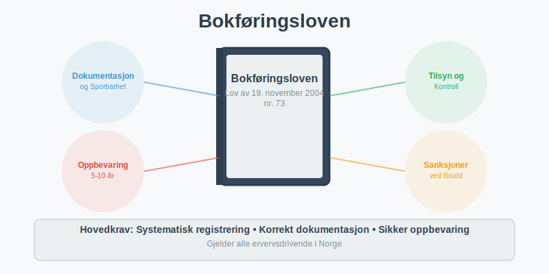
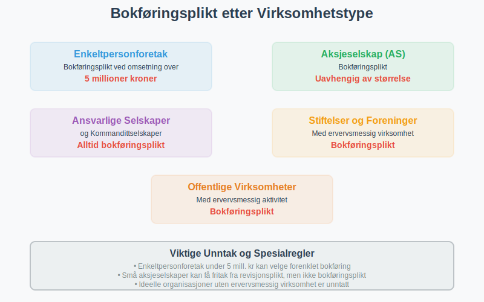
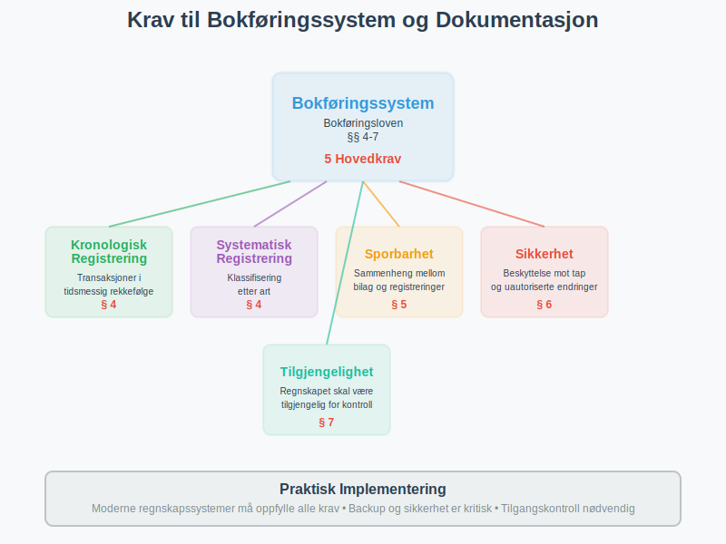
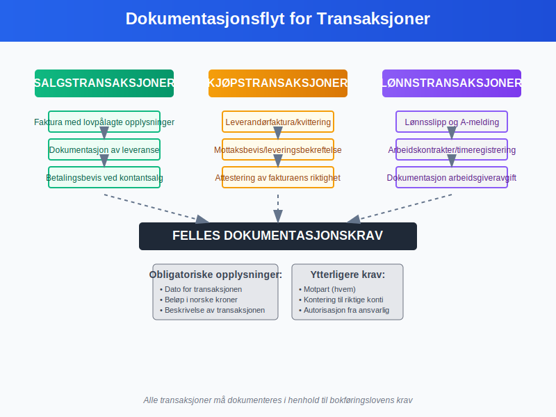
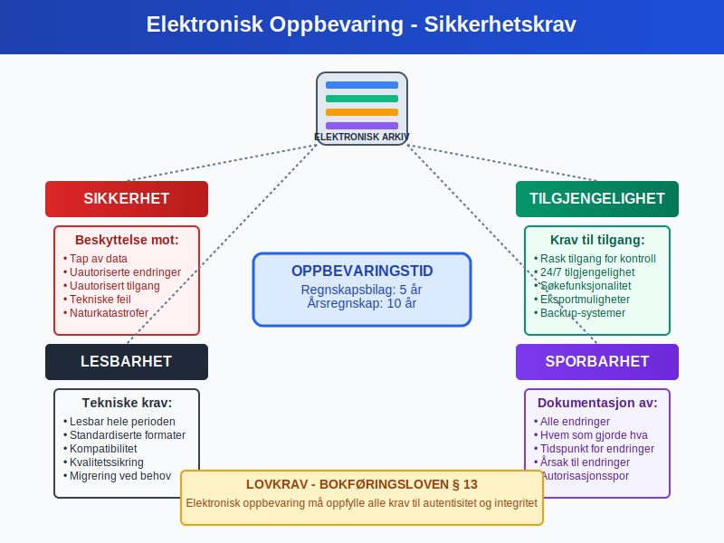
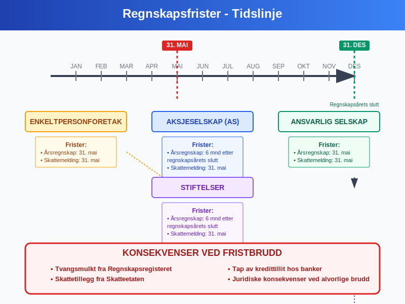
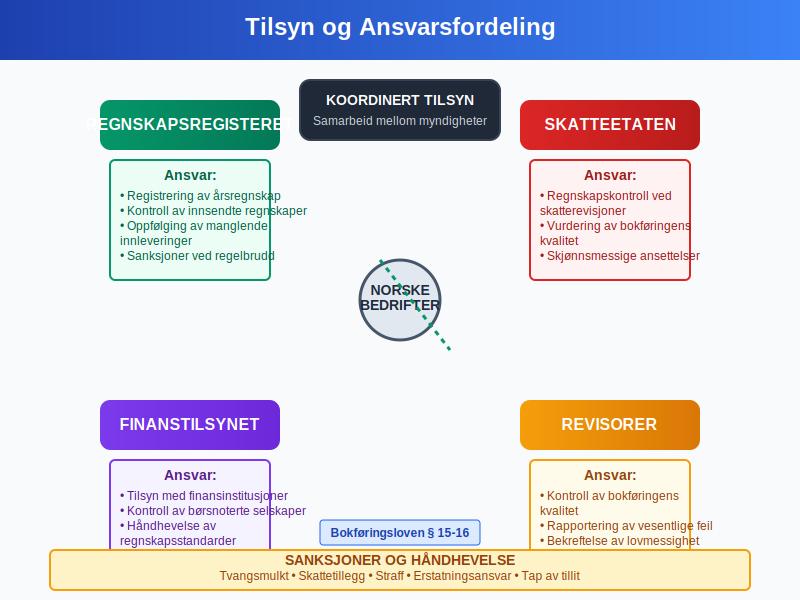
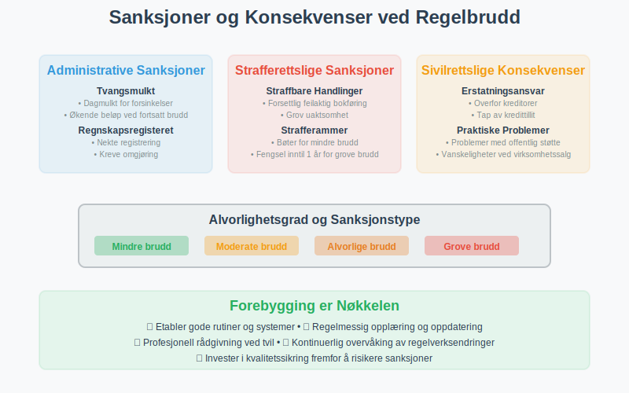
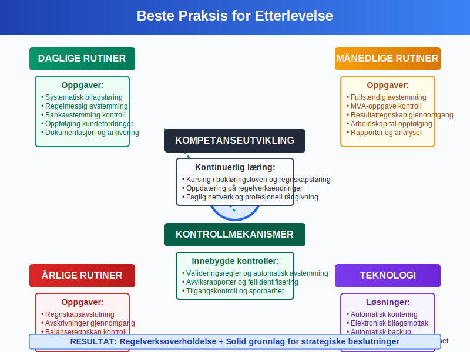
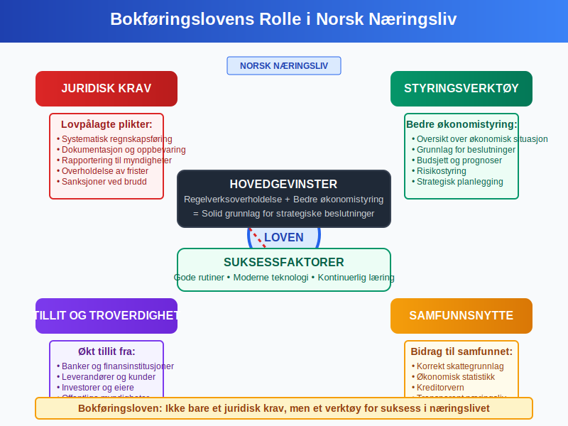

Bokføringsloven er det sentrale lovverket som regulerer hvordan norske bedrifter skal føre regnskap og oppbevare regnskapsmateriale. Loven sikrer transparent og korrekt regnskapsføring gjennom detaljerte krav til bokføring, dokumentasjon og rapportering.
For en oversikt over prioriteringen av ulike rettskilder i norsk regnskapslovgivning, se Rettskildehierarkiet.

Bokføringslovens Formål og Virkeområde
Bokføringsloven av 19. november 2004 nr. 73 har som hovedformål å:
- Sikre korrekt regnskapsføring i norske bedrifter
- Beskytte kreditorer og andre interessenter
- Legge til rette for skattekontroll og offentlig tilsyn
- Fremme tilliten til norsk næringsliv
- Standardisere regnskapspraksis på tvers av bransjer
Hvem Omfattes av Bokføringsloven?
Bokføringsloven gjelder for alle som driver ervervsmessig virksomhet i Norge:
- Enkeltpersonforetak med omsetning over 5 millioner kroner
- Aksjeselskaper (AS) uavhengig av størrelse
- Ansvarlige selskaper og kommandittselskaper
- Stiftelser og foreninger med ervervsmessig virksomhet
- Offentlige virksomheter som driver ervervsmessig aktivitet

Hovedkrav i Bokføringsloven
Bokføringsplikt og Grunnleggende Prinsipper
Bokføringsloven etablerer bokføringsplikten for norske virksomheter og stiller strenge krav til hvordan regnskapet skal føres:
Grunnleggende Bokføringsprinsipper:
- Fullstendighet: Alle forretningshendelser skal registreres
- Nøyaktighet: Registreringer skal være korrekte og dokumenterte
- Klarhet: Regnskapet skal være forståelig og oversiktlig
- Kontinuitet: Samme prinsipper skal brukes fra år til år
- Forsiktighet: Usikkerhet skal håndteres konservativt
Krav til Bokføringssystem
Bokføringsloven stiller spesifikke krav til bokføringssystemet:
| Krav | Beskrivelse | Lovhjemmel |
|---|---|---|
| Kronologisk registrering | Alle transaksjoner skal registreres i tidsmessig rekkefølge | § 4 |
| Systematisk registrering | Transaksjoner skal klassifiseres etter art | § 4 |
| Sporbarhet | Klar sammenheng mellom bilag og registreringer | § 5 |
| Sikkerhet | Beskyttelse mot tap og uautoriserte endringer | § 6 |
| Tilgjengelighet | Regnskapet skal være tilgjengelig for kontroll | § 7 |

Dokumentasjonskrav og Bilagsbehandling
Bilagskrav
Bokføringsloven krever at alle regnskapsregistreringer skal være dokumentert med bilag:
Obligatoriske Opplysninger på Bilag:
- Dato for transaksjonen
- Beløp i norske kroner
- Beskrivelse av transaksjonen
- Motpart (hvem transaksjonen gjelder)
- Kontering til riktige konti
- Autorisasjon fra ansvarlig person
Spesielle Dokumentasjonskrav
For ulike typer transaksjoner gjelder spesifikke krav:
Salgstransaksjoner:
- Faktura med alle lovpålagte opplysninger
- Dokumentasjon av leveranse
- Betalingsbevis ved kontantsalg
Kjøpstransaksjoner:
- Leverandørfaktura eller kvittering
- Mottaksbevis eller leveringsbekreftelse
- Attestering av fakturaens riktighet
Lønnstransaksjoner:
- Lønnsslipp og A-melding
- Arbeidskontrakter og timeregistreringer
- Dokumentasjon av arbeidsgiveravgift

Oppbevaringsregler
Oppbevaringsplikt
Bokføringsloven krever systematisk oppbevaring av regnskapsmateriale:
Oppbevaringstid:
| Materiale | Oppbevaringstid | Lovhjemmel |
|---|---|---|
| Regnskapsbilag | 5 år | § 13 |
| Årsregnskap | 10 år | § 13 |
| Revisjonsberetning | 10 år | § 13 |
| Dokumentasjon av bokføringssystem | 5 år | § 13 |
| Korrespondanse | 5 år | § 13 |
For en omfattende guide til oppbevaring av regnskapsmateriale, inkludert detaljerte oppbevaringsfrister, digitale løsninger, sikkerhetskrav og praktiske implementeringsstrategier, se vår spesialiserte artikkel.
Oppbevaringsform:
- Papirbasert: Originaldokumenter i sikre arkiver
- Elektronisk: Digitale kopier med autentisitet og integritet
- Mikrofilm: Godkjent alternativ for eldre dokumenter
- Kombinert: Blanding av papir og elektroniske løsninger
Krav til Elektronisk Oppbevaring
For elektronisk oppbevaring gjelder spesielle krav:
- Lesbarhet: Dokumenter skal kunne leses gjennom hele oppbevaringsperioden
- Søkbarhet: Effektiv gjenfinning av dokumenter
- Sikkerhet: Beskyttelse mot tap og uautoriserte endringer
- Sporbarhet: Dokumentasjon av alle endringer
- Tilgjengelighet: Rask tilgang for kontrollformål

Regnskapsåret og Rapporteringsfrister
Regnskapsåret
Bokføringsloven regulerer regnskapsårets lengde og avslutning:
Standard Regnskapsår:
- Kalenderår: 1. januar til 31. desember (mest vanlig)
- Avvikende regnskapsår: Tillatt med særskilt begrunnelse
- Første regnskapsår: Kan være kortere eller lengre enn 12 måneder
Frister for Regnskapsavslutning
| Virksomhetstype | Frist for årsregnskap | Frist for skattemelding |
|---|---|---|
| Enkeltpersonforetak | 31. mai | 31. mai |
| Aksjeselskap | 6 måneder etter regnskapsårets slutt | 31. mai |
| Ansvarlig selskap | 31. mai | 31. mai |
| Stiftelser | 6 måneder etter regnskapsårets slutt | 31. mai |
Konsekvenser ved Fristbrudd
Forsinkelser kan medføre:
- Tvangsmulkt fra Regnskapsregisteret
- Skattetillegg fra Skatteetaten
- Tap av kredittillit hos banker og leverandører
- Juridiske konsekvenser ved alvorlige brudd

Tilsyn og Kontroll
Offentlig Tilsyn
Flere offentlige organer fører tilsyn med overholdelse av bokføringsloven:
Regnskapsregisteret:
- Registrering av årsregnskap
- Kontroll av innsendte regnskaper
- Oppfølging av manglende innleveringer
- Sanksjoner ved regelbrudd
Skatteetaten:
- Regnskapskontroll i forbindelse med skatterevisjoner
- Vurdering av bokføringens kvalitet
- Krav om dokumentasjon og forklaringer
- Skjønnsmessige ansettelser ved mangelfullt regnskap
Finanstilsynet:
- Tilsyn med finansinstitusjoner og børsnoterte selskaper
- Kontroll av regnskapsrapportering
- Håndhevelse av regnskapsstandarder
Revisjonsplikt
For mange virksomheter er revisjon obligatorisk:
Revisjonsplikt gjelder for:
- Aksjeselskaper over visse størrelsesgrenser
- Allmennaksjeselskaper (ASA)
- Stiftelser med stor omsetning
- Virksomheter med offentlig støtte
Revisors Ansvar:
- Kontroll av bokføringens kvalitet
- Vurdering av regnskapsprinsipper
- Rapportering av vesentlige feil
- Bekreftelse av lovmessighet

Sanksjoner og Konsekvenser
Administrative Sanksjoner
Brudd på bokføringsloven kan medføre administrative sanksjoner:
Tvangsmulkt:
- Dagmulkt for forsinket innlevering av årsregnskap
- Økende beløp ved fortsatt manglende etterlevelse
- Maksimalbeløp fastsatt i forskrift
Regnskapsregisteret kan:
- Nekte registrering av mangelfulle regnskaper
- Kreve omgjøring av feilaktige regnskaper
- Pålegge utbedring av systemfeil
- Rapportere alvorlige brudd til påtalemyndigheten
Strafferettslige Sanksjoner
Alvorlige brudd kan medføre straff:
Straffbare Handlinger:
- Forsettlig feilaktig bokføring
- Grov uaktsomhet i regnskapsføringen
- Ødeleggelse av regnskapsmateriale
- Hindring av offentlig kontroll
Strafferammer:
- Bøter for mindre alvorlige brudd
- Fengsel inntil 1 år for grove brudd
- Inndragning av økonomisk utbytte
- Erstatningsansvar overfor skadelidte
Sivilrettslige Konsekvenser
Brudd kan også få sivilrettslige konsekvenser:
- Erstatningsansvar overfor kreditorer
- Tap av kredittillit hos finansinstitusjoner
- Problemer med offentlige tilskudd og støtte
- Vanskeligheter ved salg av virksomheten

Praktiske Råd for Etterlevelse
Etablering av Gode Rutiner
For å sikre god etterlevelse av bokføringsloven:
Daglige Rutiner:
- Systematisk bilagsføring ved alle transaksjoner
- Regelmessig avstemming av konti
- Kontroll av bankavstemming
- Oppfølging av kundefordringer
Månedlige Rutiner:
- Fullstendig avstemming av alle balanseposter
- Kontroll av mva-oppgave
- Gjennomgang av resultatregnskap
- Oppfølging av arbeidskapital
Årlige Rutiner:
- Forberedelse til regnskapsavslutning
- Gjennomgang av avskrivninger
- Kontroll av balanseregnskap
- Revisjon av regnskapsprinsipper
Teknologiske Løsninger
Moderne regnskapssystemer kan hjelpe med etterlevelse:
Automatisering:
- Automatisk kontering av standardtransaksjoner
- Integrerte kontroller for å fange opp feil
- Elektronisk bilagsmottak
- Automatisk backup og arkivering
Kontrollmekanismer:
- Innebygde valideringsregler
- Automatisk avstemming av konti
- Rapporter for avviksidentifisering
- Tilgangskontroll og sporbarhet
Kompetanseutvikling
Kontinuerlig læring er viktig for god etterlevelse:
- Kursing i bokføringsloven og regnskapsføring
- Oppdatering på endringer i regelverket
- Faglig nettverk med andre regnskapsførere
- Profesjonell rådgivning ved komplekse spørsmål

Endringer og Fremtidige Utviklingstrekk
Digitalisering og Modernisering
Bokføringsloven tilpasses digitale utviklingstrekk:
Pågående Endringer:
- Elektronisk fakturering blir mer utbredt
- Automatisert regnskapsføring gjennom AI og maskinlæring
- Sanntidsrapportering til offentlige myndigheter
- Blockchain-teknologi for økt sporbarhet
Fremtidige Muligheter:
- Standardiserte API-er for datautveksling
- Automatisk skatteberegning og -rapportering
- Prediktiv analyse for bedre økonomistyring
- Integrerte kontrollsystemer på tvers av myndigheter
Internasjonale Standarder
Norge tilpasser seg internasjonale regnskapsstandarder:
- IFRS for børsnoterte selskaper
- Harmonisering med EU-direktiver
- Økt fokus på bærekraftsrapportering
- Standardisering av regnskapspraksis
Sammendrag og Konklusjon
Bokføringsloven er fundamentet for transparent og pålitelig regnskapsføring i Norge. Loven sikrer at:
Hovedpunkter:
- Alle ervervsdrivende har plikt til å føre regnskap etter lovens krav
- Systematisk dokumentasjon og oppbevaring er obligatorisk
- Offentlig tilsyn sikrer etterlevelse og kvalitet
- Sanksjoner ved brudd kan være alvorlige
- Gode rutiner og moderne teknologi letter etterlevelsen
Praktiske Anbefalinger:
- Invester i gode regnskapssystemer og rutiner
- Hold deg oppdatert på endringer i regelverket
- Søk profesjonell rådgivning ved tvil
- Prioriter regnskapskvalitet som grunnlag for god virksomhetsstyring
Bokføringsloven er ikke bare et juridisk krav, men også et verktøy for bedre økonomistyring og økt tillitt i næringslivet. Ved å følge lovens krav sikrer bedrifter både regelverksoverholdelse og solid grunnlag for strategiske beslutninger.
